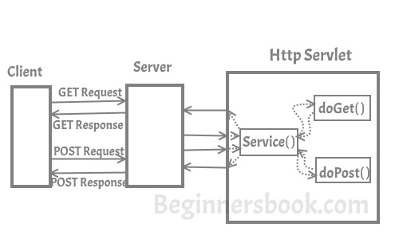
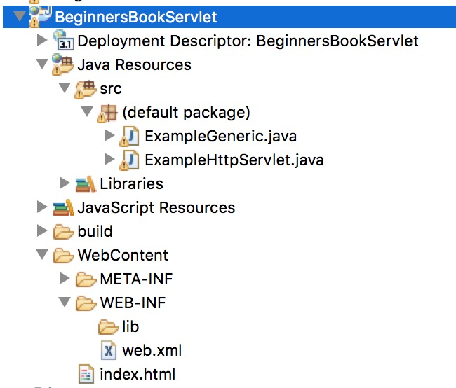
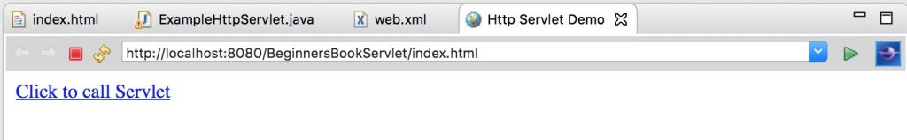
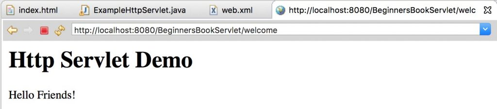

In Servlet API, I have discussed little bit about Http Servlet. In this article, I will discuss Http Servlet in detail.
Unlike Generic Servlet, the HTTP Servlet doesn’t override the service() method. Instead it overrides the doGet() method or doPost() method or both. The doGet() method is used for getting the information from server while the doPost() method is used for sending information to the server.
In Http Servlet there is no need to override the service() method because this method dispatches the Http Requests to the correct method handler, for example if it receives HTTP GET Request it dispatches the request to the doGet() method.
How Http Servlet works?
As you can see in the diagram below that client (user’s browser) make requests. These requests can be of any type, for example – Get Request, Post Request, Head Request etc. Server dispatches these requests to the servlet’s service() method, this method dispatches these requests to the correct handler for example if it receives Get requests it dispatches it to the doGet() method.

Hierarchy of Http Servlet
java.lang.Object
|_extended byjavax.servlet.GenericServlet
|_extended byjavax.servlet.http.HttpServlet
I have already discussed in the Generic Servlet article that you should always use HttpServlet instead of the GenericServlet. HttpServlet is easier to work with, and has more methods to work with than GenericServlet.
Http Servlet example
I am using Eclipse IDE for this example. Create New “Dynamic Web Project” from the Eclipse file menu.
I have explained all the steps for creating Servlet in Eclipse IDE, however if you are unfamiliar with Eclipse and don’t have it installed on your system then refer this guide: How to Install Eclipse, configure tomcat and run your First Servlet Application using Eclipse.
Project structure (or you can hierarchy) would look like this, once you are done creating all the following files in IDE.

index.html
We are creating an html file that would call the servlet once we click on the link on web page. Create this file in WebContent folder. The path of the file should look like this: WebContent/index.html
index<!DOCTYPE html> <html> <head> <meta charset="UTF-8"> <title>Http Servlet Demo</title> </head> <body> <a href="welcome">Click to call Servlet</a> </body> </html>
ExampleHttpServlet.java
Now, we are creating a Http Servlet by extending HttpServlet class. Right click on the src folder and create a new class file, name the file as ExampleHttpServlet. The file path should look like this: Java Resources/src/default package/ExampleHttpServlet.java
import java.io.*;
import javax.servlet.*;
import javax.servlet.http.*;
// Creating Http Servlet by Extending HttpServlet class
public class ExampleHttpServlet extends HttpServlet
{
private String mymsg;
public void init() throws ServletException
{
mymsg = "Http Servlet Demo";
}
public void doGet(HttpServletRequest request,
HttpServletResponse response) throws ServletException,
IOException
{
// Setting up the content type of web page
response.setContentType("text/html");
// Writing the message on the web page
PrintWriter out = response.getWriter();
out.println("<h1>" + mymsg + "</h1>");
out.println("<p>" + "Hello Friends!" + "</p>");
}
public void destroy()
{
// Leaving empty. Use this if you want to perform
//something at the end of Servlet life cycle.
}
}
web.xml
This file can be found at this path WebContent/WEB-INF/web.xml. In this file we will map the Servlet with the specific URL. Since we are calling welcome page upon clicking the link on index.html page so we are mapping the welcome page to the Servlet class we created above.
<web-app> <display-name>BeginnersBookServlet</display-name> <welcome-file-list> <welcome-file>index.html</welcome-file> <welcome-file>index.htm</welcome-file> <welcome-file>index.jsp</welcome-file> <welcome-file>default.html</welcome-file> <welcome-file>default.htm</welcome-file> <welcome-file>default.jsp</welcome-file> </welcome-file-list> <servlet> <servlet-name>MyHttpServlet</servlet-name> <servlet-class>ExampleHttpServlet</servlet-class> </servlet> <servlet-mapping> <servlet-name>MyHttpServlet</servlet-name> <url-pattern>/welcome</url-pattern> </servlet-mapping> </web-app>
Run the project:
Right click on the index.html, run on server.
Output:

Upon clicking the link you would get this screen:

Methods of HttpServlet class
1. protected void doGet(HttpServletRequest req, HttpServletResponse resp): This method is called by servlet service method to handle the HTTP GET request from client. When overriding this method, read the request data, write the response headers, get the response’s writer or output stream object, and finally, write the response data.
2. protected long getLastModified(HttpServletRequest req): Returns a long integer specifying the time the HttpServletRequest object was last modified, in milliseconds since midnight, January 1, 1970 GMT, or -1 if the time is not known
3. protected void doHead(HttpServletRequest req, HttpServletResponse resp): This method is called by servlet service method to handle the HTTP HEAD request from client. The client sends a HEAD request when it wants to see only the headers of a response, such as Content-Type or Content-Length
4. protected void doPost(HttpServletRequest req, HttpServletResponse resp): This method is called by servlet service method to handle the POST request from client. The HTTP POST method allows the client to send data of unlimited length to the Web server a single time and is useful when posting information to the server. Unlike, doGet where we get information from the sever this method is used when we are transferring information from client to the server.
5. protected void doPut(HttpServletRequest req, HttpServletResponse resp): This method is called by servlet service method to handle the PUT request from client. This method is similar to doPost method but unlike doPost method where we send information to the server, this method sends file to the server, this is similar to the FTP operation from client to server.
6. protected void doDelete(HttpServletRequest req, HttpServletResponse resp): Called by servlet service() method to handle the DELETE request from client that allows a client to delete a document, webpage or information from the server.
7. protected void doOptions(HttpServletRequest req, HttpServletResponse resp): Called by the service method to allow a servlet to handle a OPTIONS request. The OPTIONS request determines which HTTP methods the server supports and returns an appropriate header.
8. protected void doTrace(HttpServletRequest req, HttpServletResponse resp): This method is called by service() method for handling TRACE request. Used for debugging purposes.
9. protected void service(HttpServletRequest req, HttpServletResponse resp): There is no need to override this method, this method receives the HTTP request from client and forwards them to the corresponding doXXX methods such as doGet(), doPost(), doHEAD() etc.
10. public void service(ServletRequest req, ServletResponse res): Forwards client request to the protected service method. There’s no need to override this method as well.
Reference: Http Servlet Official Documentation
Leave a Reply